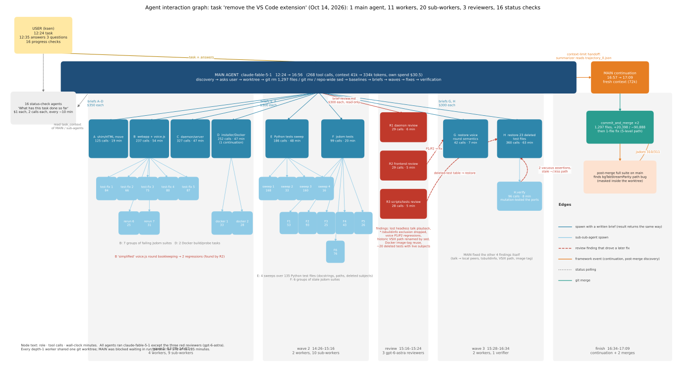
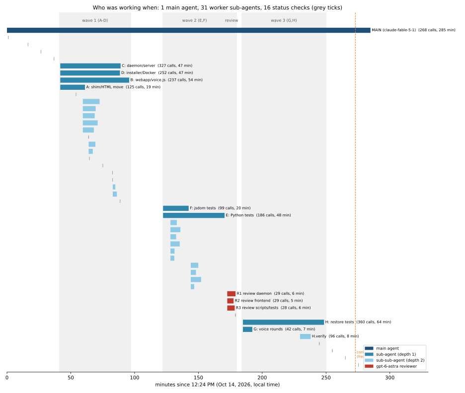
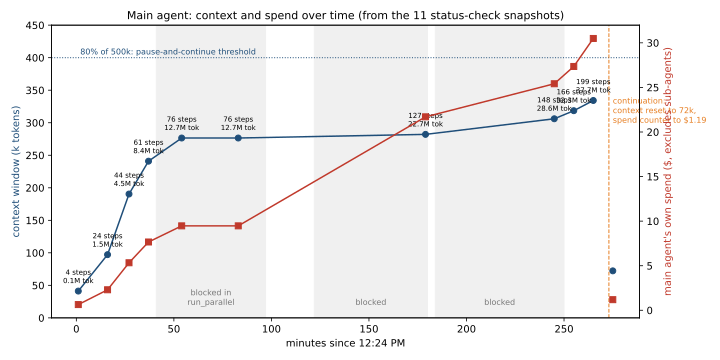
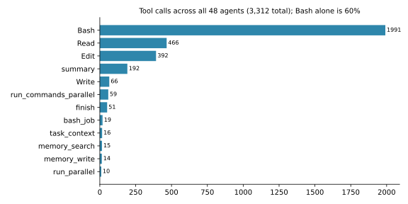
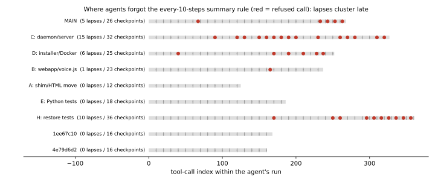

Source: the shared-chat export of the full trajectory (23 MB HTML, title "can you completely get rid of …"). Parsed with a small stdlib HTML parser into 3,677 events across 48 task panels. Figures are in reports/traj-analysis-figs/; the parser and figure scripts are in reports/traj-analysis-tools/ (run parse_traj.py <export.html> tmp/traj/traj.json, then figures.py and interaction_graph.py with uv run --with matplotlib).
On Oct 14, 2026 at 12:24 PM the user asked Sorcar, in one sentence, to remove the VS Code extension from the kiss repository and keep the remote web app working. The main agent (claude-fable-5-1, budget $5,000) finished at 5:09 PM. The merged result: 1,297 files changed, +20,398 / −90,888 lines, 311/311 jsdom suites and 12,377 Python tests green, uv run check --full clean, then a second one-file commit for a bug the first merge had hidden.
To get there the main agent spawned 11 worker sub-agents in three waves, those workers spawned 20 more, three read-only reviewers on a different model (gpt-6-astra) checked the work in between, and 16 tiny "what has this task done so far" agents polled progress every ten minutes or so. Counting everything, 48 agents made 3,312 tool calls and received about 7.0 million characters of tool output.

| Local time | Who | What happened |
|---|---|---|
| 12:24–12:31 | main | Pulled 6 memory pages about the extension, grepped for everything that referenced src/kiss/agents/vscode, read the installer and the HTML builder. First "thinking" step cost $0.27 (the memory recall). |
| 12:32–12:35 | main ↔ user | Asked three layout questions (where to put the web files, whether to keep the Docker code-server image, what to do with the VSIX tooling). The user answered in under three minutes with ten words. |
| 12:35–12:50 | main | Created the worktree, git rm'd the extension, git mv'd media/ and the tests, ran a repo-wide sed for paths and parents[N] depths, deleted VSIX and Windows installer scripts. |
| 12:50–13:05 | main | Baselines: jsdom 294/305, Python 201 failures (mostly path depth). Discovered that a chained sed had collapsed every parents[5], [4], [3] to [2]; restored those files from HEAD and redid the rewrite in one pass. Wrote briefs A–D and a common brief. |
| 13:05–14:01 | wave 1 | A (move shim and HTML into real files), B (web app main.js/voice.js cleanup; it spawned 7 test-fix groups), C (daemon: catalog, dispatch, local tabs, talk fan-out, speech module), D (installer, release, Docker; it spawned 2 Docker probes and needed a continuation). Main sat in run_parallel for 55 minutes. |
| 14:01–14:26 | main | Re-ran everything, fixed cross-wave breakage (shared worktree), wrote briefs E and F. |
| 14:26–15:16 | wave 2 | E swept 135 Python test files (4 sub-sweeps); F fixed stale jsdom suites (6 groups). |
| 15:16–15:24 | review | Three gpt-6-astra reviewers, each 28–29 calls in 5–6 minutes, found six demonstrated problems (section 4). |
| 15:24–15:28 | main | Fixed four findings directly, wrote briefs G and H. |
| 15:28–16:34 | wave 3 | G restored the voice-round semantics with two reproducing tests (7 min). H restored 23 deleted test files (63 min) and spawned a verifier that mutation-tested the ports. |
| 16:34–16:55 | main | Full verification: 24 parallel pytest chunks, all jsdom suites, lint. Started gathering numbers for the final report. |
| 16:55–16:57 | framework | Context limit reached. A summarizer read tmp/trajectory_0.json and wrote a handoff; a fresh session resumed. |
| 16:57–17:09 | main (continued) | Merged; re-ran the suites on the main checkout; found bgTabStreamParity.test.js failing (310/311); fixed and merged again; wrote memory pages. |

| Measure | Value | Note |
|---|---|---|
| Wall clock, main task | 285 min | 12:24 PM → 5:09 PM |
| Worker agent-minutes (all workers, all depths) | 735 min | 2.6× the wall clock; depth-1 workers 324 min, depth-2 126 min, main 285 min |
| Main agent time spent waiting | ≈244 min (86%) | 178 min in run_parallel, 63 min in bash_job waits for test suites, 3 min waiting for the user |
| Tool calls, all agents | 3,312 | Bash 1,991 · Read 466 · Edit 392 · summary 192 · Write 66 · run_commands_parallel 59 · finish 51 · memory_* 43 · bash_job 19 · run_parallel 10 |
| Bash calls containing grep/rg | 1,343 | two of every three shell commands were searches |
| Python heredocs inside Bash | 339 | 285 of them rewrite a file; 123 apply more than two replacements at once |
| Tool output received | 7.0 M chars | D 766k, H 676k, C 591k, main 426k, reviewers R1 410k, R2 422k, R3 118k |
| Main agent tokens (cumulative, at 4:49 PM) | 37.7 M | 199 steps, so ≈189k tokens per step; almost all of it is re-read context |
| Sub-agent C tokens (at 1:47 PM) | 52.1 M | 306 steps in 41 minutes, context 313k when sampled |
| Main agent's own spend | $30.49 + ≈$2 | before and after the continuation; does not include children |
| Visible per-call costs | $30.73 | only the 313 steps that produced prose carry a price in the export; the real total is far higher |
| Budget caps given to direct children | $3,500 | 4 × $350 (wave 1) + 7 × $300 (waves 2–3 and the reviewers), plus $1 for each status check; grandchildren drew on their parents' caps; actual spend per child is not in the export |
| Files changed in the merge | 1,297 | +20,398 / −90,888 lines |
| Test outcome | 311/311 · 12,377/0 | jsdom suites · Python passed/failed (66 skipped) |
A rough estimate of the total bill: three agents whose spend was sampled (main $30.5, C $28.2 at 1:47, B $17.4 at 1:53) ran at $0.09–0.15 per step. Applied to all 3,312 steps that gives something in the $300–450 range. Treat that as an order of magnitude, not a figure.

task_context snapshots. The flat segments are the waves: while children work, the parent's context and bill do not move. The jump from $9.47 to $21.70 across wave 1 is the cost of reading four children's results plus the cross-wave fixing.
| Problem | Introduced by | Caught by | Fixed by |
|---|---|---|---|
Chained sed rewrote parents[5]→[4]→[3]→[2] in one cascade, so every test looked for the repo root two levels too high. | main, 12:4x | main, from the 201-failure Python baseline | main, restoring the files from HEAD and redoing the rewrite in a single pass |
| Native talk playback was removed as "extension-only", which also silenced headless Python CLI clients. | C | R1 (reproduced HEAD vs staged fan-out with a real headless client) | main: play natively for interested local peers |
*.tsbuildinfo dropped from the worktree rescue exclusion, so generic TypeScript caches would be "rescued" into user repos. | C | R1 | main |
Voice-round bookkeeping "simplified": cancelled credit consumed before live rounds, and a new forgetSpeechRounds() let a delayed reply from chat A be submitted into chat B. | B | R2 (two before/after harness runs) | G restored HEAD's order, added REV-1/REV-2 reproductions, and wrote down the remaining trade-off honestly |
| Repo-wide path rename also rewrote a historical path in the bootstrap's legacy-VSIX recovery, breaking upgrades of old clones. | main (sed) | R3 | main |
sorcar-docker reused any image tagged kiss-sorcar, including the old code-server image, with the new port/volume mapping. | D | R3 | main (generation-tagged image) |
| About 20 test suites deleted although their subjects (attachments, report auto-open, toasts, two-client sync…) still exist. | main / E / F | R3, by loading deleted tests in memory against the new tree | H restored 16 jsdom + 7 Python files |
| Two of the restored tests could not tell the real code from a mutant (vacuous assertions). | H | H.verify, by editing main.js line 6366 and re-running | H |
bgTabStreamParity.test.js climbs five directories to find the repo; inside the worktree that lands on the parent checkout, so it passed by accident. | pre-existing + the move | main's continuation, running the suite on the real checkout after merging | main, second merge |
These came out of the parsed data rather than the prose. Each one has the numbers behind it.
Every agent is told to call summary on every tenth step; the framework refuses the next call if it does not. 48 of the 49 tool errors in the whole trajectory are exactly that refusal (the 49th was a bad max_line argument to Read). Those are 48 wasted steps, and they are not spread evenly:
Nothing about the rule changed; the only thing that changed was how much context sat between the instruction and the current step. The depth-2 sub-agents never called summary and were never refused, so they were evidently not given the tool at all.

The framework's Edit tool requires a prior Read and does one replacement per step. The agents found a cheaper route: 339 Bash calls are Python heredocs, 285 of them rewrite a file, and 123 apply three or more replacements in one go. The idiom is always the same:
def rep(old, new, count=1):
global s
assert s.count(old) == count, (s.count(old), old[:60])
s = s.replace(old, new)
That is the Edit tool's uniqueness guarantee, re-implemented so that one step can carry ten edits and skip the read-before-edit gate. Sub-agent C made 81 such heredoc calls (80 of them writing files, many carrying several replacements) against 14 Edit calls and 13 Reads. The pressure that produced this is visible in the numbers of section 5.4: every step costs more as the context grows, so batching is rational. The short-lived sweep agents under E (one of them: 76 Reads, 79 Edits, no heredocs) followed the convention; the long-lived ones drifted away from it.
The status-check agents receive the chat history. In it, while the main task was still running, its result line read "Agent Failed Abruptly". Sub-agent D, after its own continuation, wrote into its handoff summary that "a previous attempt at the parent task had failed abruptly". Nothing had failed; the label is what the history shows for a task that has no result yet. The sentence then went into D's final report, which the main agent read. It did no harm here, but it is a clean example of a display artefact being laundered into an agent's stated belief.
The only per-call prices in the export are on steps that produced prose. Comparing the first third of each run with the last third: main $0.09 → $0.19 per step, C $0.07 → $0.19, D $0.13 → $0.15. The main agent averaged 189k tokens per step and 37.7M tokens over 199 steps, nearly all of it re-read context. At the same time it was blocked for roughly 244 of its 285 minutes (178 in run_parallel, 63 waiting for test suites, 3 for the user). The expensive part of the agent was the part doing the least.
At 4:55:03 PM the main agent ran a shell command it described as "Gather numbers for the report". Thirteen seconds later a different voice appears in the same panel: "I'll start by reading the beginning of the trajectory file to understand the task". That is the framework's continuation summarizer, which read tmp/trajectory_0.json in chunks and wrote the handoff that the next session started from. The fresh session merged, then re-ran the suites on the main checkout instead of the worktree, and bgTabStreamParity.test.js failed. The test finds the repository root by climbing five directories; from …/.kiss-worktrees/kiss_wt-…/src/kiss/webapp/test/ that lands on the parent checkout, so inside the worktree it had been testing the wrong tree and passing. Every verification for four and a half hours happened inside the worktree. An accident of context exhaustion produced the one check that was outside it.
The three gpt-6-astra reviewers used 28–29 tool calls each and took five to six minutes, yet R1 and R2 each pulled over 400k characters of tool output (R3 118k), because they wrote scripts rather than reading. R2 parsed the deleted inline _WS_SHIM_JS string and the new transport.js into normalized JavaScript ASTs and reported them identical "after accounting for declaration kinds, callback syntax, catch-variable naming and acquireVsCodeApi → acquireTransport". R1 did the same for 56 definitions in speech.py against the deleted voice_wake.py (three docstrings differ, nothing else). R3 loaded deleted tests in memory against the new tree with one identifier swapped and showed 23 of them still pass, which is how "deleted test with a living subject" became a demonstrated finding instead of an opinion. Each reviewer also ran HEAD and staged code side by side on the same input and printed both outputs, so every finding came with a two-line reproduction.
H's verifier did not run the 23 restored test files and stop at "pass". It edited main.js line 6366 to ignore the polled tab's running flag, re-ran taskUpdatePolling.test.js, and watched it still pass; then deleted the promptOpened message from openFileMarkdownPreview.test.js and watched that still pass. Both tests were restored, green, and vacuous. It then confirmed with cmp that main.js was byte-identical afterwards.
The repo-wide sed that moved src/kiss/agents/vscode/… to src/kiss/webapp/… also rewrote the string inside the bootstrap script's recovery code for old clones, where it names the VSIX path as it existed in old releases. The matching test fixture was rewritten the same way, so the tests passed while both were wrong. Only R3, which checked the staged script against git show HEAD:scripts/install.sh and re-ran the test with the historical path restored, saw it.
voice.js was "simplified" by B (which introduced the P1/P2 regressions), diagnosed by R2, and restored by G, in one afternoon. B and G each wrote a memory page titled "voice.js after the VS Code extension removal"; G's replaced B's. The lesson the main agent recorded afterwards, in its own memory page: "Sub-agents given 'simplify X' will also 'fix' behaviour they consider buggy (here: voice round accounting). Tell them explicitly" which behaviours must not change.
run_parallel panels report 0 ms, and the wait is attributed to the previous tool call, so a 1 KB brief appears to have taken 55 minutes to write. The wave durations in this report come from that artefact.run_parallel results are cut at 3,021 characters, so the main agent's view of each wave is not recoverable from the export.The export has no machine-readable form, so I wrote a 200-line stdlib HTML parser (reports/traj-analysis-tools/parse_traj.py) that turns each task panel into events: tool name, arguments, command text, result text, error flag, elapsed, timestamps, and the "thinking" panels with their prices. Timestamps are the export's local time (UTC−7). Durations are first-to-last tool call, so an agent's final model step is not counted. Costs are a floor: only steps with prose carry a price, and the task_context snapshots exclude children. Nothing here was taken from the agents' own claims without checking it against the event data, except the test counts and merge statistics, which come from command output quoted in the final summaries.